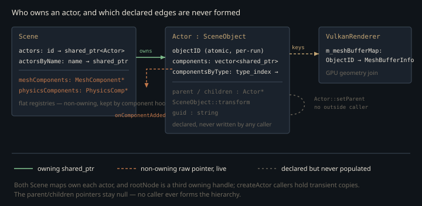

Monograph · Tree · ← Module hub · Actors & hierarchy
scene
Actors & hierarchy
Actor as SceneObject with parent/children and lifecycle.
The only SceneObject there is
`SceneObject` reads like the base of a family: identity, name, transform, model, material. Exactly one class derives from it — `Actor` — and `Actor` re-implements nearly every member it inherits. It is not a base plus a specialisation; it is one class with a fossil layer underneath, and the rest of this page follows from that.
Two of those five members are still load-bearing, and they are exactly the two `Actor` forwards to rather than shadows. The name is stored only in `SceneObject` — `Actor::getName` calls straight through — and `Scene` keys its second owning map on the result:
actorsByName[actor->getName()] = actor;ohao/scene/scene.cpp:388Identity is the other. Each `SceneObject` takes the next value of a process-global atomic counter that starts at 1 and is never recycled:
objectID = nextObjectID.fetch_add(1);ohao/scene/scene_object.cpp:9That number is not merely a scene-map key: the renderer keys its per-actor vertex/index allocations by it, so the ObjectID is the join between CPU scene state and GPU geometry, and the shadow, GBuffer and RT passes all resolve their draw ranges through it.
m_meshBufferMap[actor->getID()] = MeshBufferInfo{ohao/gpu/vulkan/scene_upload.cpp:68Because the counter is per-process and monotone, an ObjectID means nothing across runs. `Actor` carries a `guid` string documented as the stable identity for serialisation; no code in the tree ever calls `setGuid`.

Two transforms with the same name
`SceneObject` stores a `Transform` by value and exposes it as `getTransform()`:
[[nodiscard]] Transform& getTransform() { return transform; }ohao/scene/scene_object.hpp:27`Actor` declares a member function of the same name returning a `TransformComponent*`. The return types differ, so this is neither an override nor an overload set — it is plain name hiding, and since every call site holds an `Actor` or `Actor::Ptr`, renderer, physics, picking and examples all bind to the component version. The inherited `Transform` is constructed inside every actor and read by nobody.
The component version is always non-null: the constructor installs it before any user code runs.
addComponent<TransformComponent>();ohao/scene/actor/actor.cpp:22Model and material are shadowed the same way, except that `Actor` writes *both* copies — `setModel` routes into a `MeshComponent`, creating one if absent, then also writes the inherited field:
SceneObject::setModel(model);ohao/scene/actor/actor.cpp:282Two of the three getters — `getModel` and the const `getMaterial` — prefer the component and fall back to the base, so the shadowed copy surfaces on an actor whose component was removed afterwards, handing back state no draw loop will find. The non-const overload does not fall back at all:
Material& Actor::getMaterial() {ohao/scene/actor/actor.cpp:313With no `MaterialComponent` present it installs a fresh one and returns *its* default, discarding whatever `Actor::setMaterial` had already written into `SceneObject::material`. For material the shadowing surfaces as lost data, not as a stale read.
The hierarchy nothing builds
`Actor` carries a parent pointer, a child vector, `setParent`, `addChild`, `removeChild` and `detachFromParent`, and `Scene` recurses through `getChildren()` when registering an actor. The only callers of `Actor::setParent` and `Actor::addChild` in the tree are each other, inside `actor.cpp`: no loader, factory, example or test parents one actor to another, and the `World` root the `Scene` constructor creates is registered and never used as a parent.
So the registration walk terminates after one step and the transform chain is never formed. The composition that machinery exists for —
where $M^{\text{local}}_i$ is actor $i$'s TRS matrix, $p(i)$ its parent, and the recursion bottoms out at a root whose world matrix is its local one. It is implemented lazily on the transform component, walking up the chain on demand:
worldMatrix = parent->getWorldMatrix() * localMatrix;ohao/scene/component/transform_component.cpp:239and the *only* line in the engine that ever supplies a $p(i)$ is inside the uncalled `Actor::setParent`:
transform->setParent(parent->getTransform());ohao/scene/actor/actor.cpp:164With no caller for that line, `parent` is null on every `TransformComponent` the engine builds, the product collapses to $M^{\text{world}}_i = M^{\text{local}}_i$, and every `getWorldMatrix()` the renderer uploads is a plain local TRS. Nothing looks wrong today because nothing asks for nesting — but "the scene graph is flat" is a property of the call sites, not of the data structure.
What breaks the moment the hierarchy is used
Two things in the dormant code will bite whoever wires it up. First, `setParent` and `addChild` call each other. Nothing marks the re-entry; the recursion is bounded by ordinary state tests — `setParent` returns when `parent == newParent`, and `addChild` returns when the child is already listed:
if (std::find(children.begin(), children.end(), child) != children.end()) {ohao/scene/actor/actor.cpp:175Termination is safe. What is fragile is the statement order *inside* `addChild`: the append happens before the re-entry, and that is the only reason the inner frame sees a duplicate to reject.
children.push_back(child);ohao/scene/actor/actor.cpp:180Move that line below the `child->setParent(this)` call — a plausible tidy-up, since the membership test above looks like it already covers the case — and the inner and outer frames each append, so the child lands in `children` twice. Every walk over `children` then visits it twice, and `removeChild` erases one occurrence per call, leaving an actor still listed as a child of a parent it no longer points at.
`removeChild` unlinks by writing the raw field directly:
child->parent = nullptr;ohao/scene/actor/actor.cpp:197It never touches the `TransformComponent`. `setParent` is the only routine that keeps the two parallel hierarchies in step, so an actor detached through `removeChild`, `detachFromParent` or `~Actor` — which unlinks its children exactly that way — keeps a transform still pointing into the departing parent's component. In the destructor case that is a dangling pointer a few lines later.
Both directions of the hierarchy are raw `Actor*` while the Scene owns actors as `shared_ptr` in two maps. An owning child list would make parent and child a reference cycle and leak every branch; a `weak_ptr` list would cost a lock on every traversal of a structure that exists to be walked. The raw-pointer choice is right, and `~Actor` pays for it by unlinking its children and detaching from its parent. What goes unpaid is the *second* graph, `TransformComponent::parent`, which only `setParent` maintains. Two graphs, one maintainer.
Composition through two containers
Components live in an insertion-ordered vector and, separately, in a map from `std::type_index` to one shared pointer:
componentsByType[std::type_index(typeid(T))] = component;ohao/scene/actor/actor.hpp:93The vector defines iteration order for every lifecycle call; the map defines lookup. The key is `typeid(T)` at the `addComponent<T>` call site — the static type, not the dynamic one — and holds one entry per type. Two unguarded consequences follow:
- `getComponent<Base>()` never finds something added as
`addComponent<Derived>()`. Lookup is exact-type, so component inheritance is invisible to the query API.
- A second component of the same type overwrites the map slot but *appends* to
the vector. The first becomes unreachable through `getComponent` and survives `removeComponent<T>`, which erases only the instance the map points at — yet it was already handed to the Scene by `onComponentAdded`, and every walk over the vector, `Actor::initialize` included, still touches it.
Registration is a side effect of attachment
An actor on its own tells the Scene nothing. The coupling is a virtual hook: `addComponent` calls `onComponentAdded`, which `dynamic_pointer_cast`s for the two types the Scene keeps flat registries of — mesh and physics — and pushes the raw pointer in; `setScene` replays that hook over every existing component as the actor enters or leaves a scene. Those registries are the Scene's flat, non-owning view of the actor graph, and only one of the two is ever read back: `Scene::updatePhysics` walks `physicsComponents`, while `getMeshComponents()` has no callers at all — every draw, upload and shadow loop iterates `getAllActors()` and asks each actor for its `MeshComponent` instead.
The order inside `addComponent` is the subtle part:
if (isActive()) { component->initialize(); }ohao/scene/actor/actor.hpp:94`initialize()` runs *before* `onComponentAdded`, so before the Scene can inject any state. For `PhysicsComponent` that first call finds a null physics world and does nothing but set a flag:
void PhysicsComponent::initialize() {ohao/physics/components/physics_component.cpp:381The Scene hook then supplies the world and calls `initialize()` a second time, which is when the rigid body is actually created:
component->initialize();ohao/scene/scene.cpp:186So `Component::initialize()` must be idempotent *and* tolerate missing dependencies — a hard contract on every component type, enforced by nothing.
Teardown does less than it looks
`removeComponent<T>` is the careful path — destroy, clear owner, notify. `removeAllComponents`, the path `~Actor` takes, is not:
componentsByType.clear();ohao/scene/actor/actor.cpp:214It drops both containers and calls neither `destroy()` nor `onComponentRemoved`. Teardown is correct today only because `Scene::removeActor` gets there first: `setScene(nullptr)` runs `onComponentRemoved` for every component and pulls the raw pointers out of the mesh and physics registries. The Scene's own maps are not what keep the actor alive while that runs — `unregisterActor` erases both owning maps *before* it makes the call:
actors.erase(actor->getID());ohao/scene/scene.cpp:396What still holds the actor up is the by-value `Actor::Ptr` parameter that `removeActor`, `unregisterActorHierarchy` and `unregisterActor` each take:
void Scene::unregisterActor(Actor::Ptr actor) {ohao/scene/scene.cpp:394That by-value is load-bearing, not stylistic. `Scene::removeActor(uint64_t)` hands over the map's own element, so taking the parameter by `const&` would let `actors.erase` destroy the very `shared_ptr` that the next line, `actorsByName.erase(actor->getName())`, dereferences. `MeshComponent::destroy` independently unregisters itself through its owner, so the two routes overlap harmlessly:
scene->onMeshComponentRemoved(this);ohao/scene/component/mesh_component.cpp:75That route has its own ordering requirement: `removeComponent<T>` calls `destroy()` while the owner is still set, and clears it afterwards. Swap the two statements and `MeshComponent::destroy` loses its way back to the Scene.
Nothing ticks the actors
`Actor::initialize`, `start`, `update`, `render` and `destroy` each walk the component vector, then recurse into children. `Scene::update` drives one of them:
actor->update(deltaTime);ohao/scene/scene.cpp:230and `Scene::update` itself has no callers, nor do `Scene::initialize` and `Scene::render`; `Actor::start` has none anywhere. `Actor::initialize` runs once per actor built through `Scene::createActorWithComponents`, from the component factory's setup step, and never again. The only per-frame component path is `Scene::updatePhysics`, which walks the physics registry directly and never touches an `Actor` — and its caller `VulkanRenderer::updatePhysics` is uncalled by any example. Everything else the renderer pulls: each frame it reads `actor->getTransform()->getWorldMatrix()` and the mesh/material components straight out of the actor map.
`Actor` is a lookup record, not a runtime object. Nothing schedules it and nothing nests it. Its `active` flag decides only whether `addComponent` eagerly initialises, and gates a tick that never runs; the draw loops filter on `MeshComponent::isVisible()`, and `editorVisible` has no readers at all. Three visibility-shaped flags, one of them consulted.
Contracts
- `componentsByType` is keyed on the static type at the `addComponent<T>` call
site. One component per exact type is reachable; a second of the same type is orphaned in the vector — invisible to `getComponent`, untouched by `removeComponent<T>`, yet already registered with the Scene by `onComponentAdded`.
- `Component::initialize()` may run more than once, and may run before the Scene
has supplied its dependencies. Non-idempotent initialisation duplicates whatever it creates.
- An actor must leave a scene through `Scene::removeActor` before its last
`shared_ptr` drops; `~Actor` clears its components silently, so a bypass leaves dangling `MeshComponent*` / `PhysicsComponent*` in the Scene's registries.
- `Actor::setParent` is the only routine that keeps the actor graph and the
transform graph in step. `removeChild` and `detachFromParent` unlink the first and leave the second pointing at the old parent.
Source files
ohao/scene/scene.cppohao/scene/scene_object.cppohao/gpu/vulkan/scene_upload.cppohao/scene/scene_object.hppohao/scene/actor/actor.cppohao/scene/component/transform_component.cppohao/scene/actor/actor.hppohao/physics/components/physics_component.cppohao/scene/component/mesh_component.cppParent hub for the full pipeline narrative; this page is the file-level design unit. Sitemap · hover glossary terms anywhere.